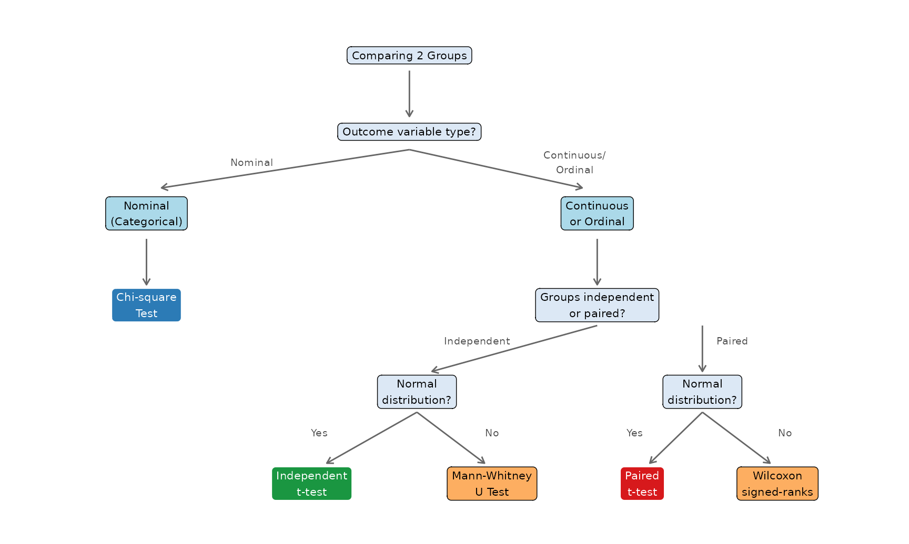

| Test Type | H1 | Use When |
|---|---|---|
| Two-tailed | mu != mu0 (different from) | You want to detect a difference in either direction (most common) |
| One-tailed (right) | mu > mu0 (greater than) | You specifically expect the value to be higher |
| One-tailed (left) | mu < mu0 (less than) | You specifically expect the value to be lower |
Statistical Testing
Introduction
Concept of Hypothesis Testing
The Logic of Hypothesis Testing
Statistical testing works by assuming the opposite of what we want to prove, then asking: “If nothing were really happening, how surprising would our data be?”
If the data would be very surprising under the assumption that nothing is happening, we conclude that something probably is happening.
The Two Hypotheses
Every hypothesis test involves two competing statements:
Null Hypothesis (\(H_0\))
The null hypothesis states that there is no effect, no difference, or no relationship in the population. It is the assumption we start with and attempt to disprove.
Examples: - The mean blood pressure is 120 mmHg. (\(H_0: \mu = 120\)) - There is no difference in recovery time between the two groups. (\(H_0: \mu_1 = \mu_2\)) - There is no association between smoking status and disease. (\(H_0:\) no association)
Alternative Hypothesis (\(H_1\) or \(H_a\))
The alternative hypothesis states that there is an effect, difference, or relationship. This is usually what the researcher believes or wants to demonstrate.
Examples: - The mean blood pressure is not 120 mmHg. (\(H_1: \mu \neq 120\)) - Recovery time differs between the two groups. (\(H_1: \mu_1 \neq \mu_2\)) - There is an association between smoking and disease. (\(H_1:\) association exists)
One-Tailed vs. Two-Tailed Tests
The alternative hypothesis can be directional or non-directional:
The p-value
The p-value is the probability of obtaining results at least as extreme as those observed, assuming the null hypothesis is true.
\[p\text{-value} = P(\text{observed result or more extreme} \mid H_0 \text{ is true})\]
- A small p-value means the observed data would be very unlikely if \(H_0\) were true evidence against \(H_0\)
- A large p-value means the observed data are consistent with \(H_0\) insufficient evidence to reject \(H_0\)
The Significance Level (α)
The significance level \(\alpha\) is the threshold we set in advance for deciding whether the p-value is “small enough” to reject \(H_0\).
The most common choice in health research is \(\alpha = 0.05\).
| Decision Rule | |
|---|---|
| If \(p\text{-value} \leq \alpha\) | Reject \(H_0\) — result is statistically significant |
| If \(p\text{-value} > \alpha\) | Fail to reject \(H_0\) — insufficient evidence |
Type I and Type II Errors
When making a decision about \(H_0\), two types of errors are possible:
| Our Decision | H0 is TRUE | H0 is FALSE |
|---|---|---|
| Reject H0 | Type I Error (alpha) - False Positive | Correct Decision (Power = 1 - beta) |
| Fail to reject H0 | Correct Decision | Type II Error (beta) - False Negative |
- Type I error (α): Concluding there is an effect when there is none (false positive). Controlled by choosing α (usually 0.05).
- Type II error (β): Missing a real effect (false negative). The probability of correctly detecting a real effect is called power = \(1 - \beta\).
General Steps in Hypothesis Testing
Statistical Testing on Categorical Data
Chi-Square Test for Two Independent Groups
When to Use
The chi-square test of independence is used when:
- The outcome variable is categorical (nominal)
- We are comparing two or more independent groups
- We want to test whether there is an association between two categorical variables
The Contingency Table
Data are arranged in a contingency table (also called a cross-tabulation):
\[\begin{array}{|l|c|c|c|} \hline & \textbf{Outcome: Yes} & \textbf{Outcome: No} & \textbf{Row Total} \\ \hline \textbf{Group 1} & a & b & a+b \\ \textbf{Group 2} & c & d & c+d \\ \hline \textbf{Column Total} & a+c & b+d & n \\ \hline \end{array}\]
The Test Statistic
\[\chi^2 = \sum \frac{(O - E)^2}{E}\]
Where: - \(O\) = observed frequency (actual count in each cell) - \(E\) = expected frequency = \(\dfrac{\text{Row total} \times \text{Column total}}{n}\)
The sum is taken over all cells in the table.
The test statistic follows a chi-square distribution with \(df = (\text{rows} - 1) \times (\text{columns} - 1)\).
For a \(2 \times 2\) table: \(df = (2-1)(2-1) = 1\).
Chi-Square Critical Values
| Degrees of Freedom (df) | chi2 critical value (alpha = 0.05) |
|---|---|
| 1 | 3.841 |
| 2 | 5.991 |
| 3 | 7.815 |
| 4 | 9.488 |
| 5 | 11.070 |
| 6 | 12.592 |
| 7 | 14.067 |
| 8 | 15.507 |
| 9 | 16.919 |
| 10 | 18.307 |
Statistical Testing on Rank Data
Mann-Whitney U Test for Two Independent Groups
When to Use
The Mann-Whitney U test (also called the Wilcoxon rank-sum test) is used when:
- The outcome variable is ordinal, or
- The outcome is continuous but not normally distributed (especially with small samples or obvious skewness)
- We are comparing two independent groups
It is a non-parametric test — it does not assume the data follow any particular distribution.
How It Works
Instead of comparing means, the Mann-Whitney test compares the ranks of observations between the two groups.
Steps:
- Combine all observations from both groups and rank them from smallest (rank 1) to largest.
- If there are tied values, assign the average rank to each tied observation.
- Calculate the sum of ranks for each group: \(W_1\) and \(W_2\).
- The test statistic \(U\) is computed from the rank sums.
- Compare to the critical value or obtain the p-value from software (SPSS).
The U Statistic
\[U_1 = n_1 n_2 + \frac{n_1(n_1+1)}{2} - W_1\]
\[U_2 = n_1 n_2 + \frac{n_2(n_2+1)}{2} - W_2\]
\[U = \min(U_1, U_2)\]
Where \(n_1\), \(n_2\) are the sample sizes and \(W_1\), \(W_2\) are the rank sums for groups 1 and 2 respectively.
For large samples, \(U\) is approximately normally distributed and a Z-score can be computed. In practice, SPSS computes the p-value directly.
Statistical Testing on Quantitative Data
Independent Samples t-Test
When to Use
The independent samples t-test is used when:
- The outcome variable is continuous (numerical)
- We are comparing the means of two independent groups
- The data are approximately normally distributed in each group (or sample sizes are large enough, \(n \geq 30\) per group)
Hypotheses
\[H_0: \mu_1 = \mu_2 \quad \text{(no difference in population means)}\] \[H_1: \mu_1 \neq \mu_2 \quad \text{(the population means differ)}\]
The Test Statistic
\[t = \frac{\bar{x}_1 - \bar{x}_2}{SE_{\bar{x}_1 - \bar{x}_2}}\]
The standard error of the difference depends on whether the two groups have equal or unequal variances — SPSS performs Levene’s test automatically to help you decide which version to use.
Equal variances assumed (pooled):
\[SE = s_p\sqrt{\frac{1}{n_1}+\frac{1}{n_2}}, \qquad s_p = \sqrt{\frac{(n_1-1)s_1^2 + (n_2-1)s_2^2}{n_1+n_2-2}}\]
Equal variances not assumed (Welch’s):
\[SE = \sqrt{\frac{s_1^2}{n_1}+\frac{s_2^2}{n_2}}\]
The test statistic follows a t-distribution with \(df = n_1 + n_2 - 2\) (equal variances) or an approximated df (Welch’s).
Paired Samples t-Test
When to Use
The paired samples t-test is used when:
- The outcome variable is continuous (numerical)
- Observations come in natural pairs — the same subject measured twice (e.g., before and after treatment), or matched pairs of subjects
- We want to test whether the mean difference within pairs is zero
Hypotheses
\[H_0: \mu_d = 0 \quad \text{(mean difference is zero)}\] \[H_1: \mu_d \neq 0 \quad \text{(mean difference is not zero)}\]
Where \(\mu_d\) is the population mean of the within-pair differences.
The Test Statistic
For each pair \(i\), compute the difference: \(d_i = x_{1i} - x_{2i}\)
Then:
\[t = \frac{\bar{d}}{s_d / \sqrt{n}}\]
Where: - \(\bar{d}\) = mean of the differences - \(s_d\) = standard deviation of the differences - \(n\) = number of pairs
The test statistic follows a t-distribution with \(df = n - 1\).
Choosing the Right Test
| Outcome Data Type | Study Design | Statistical Test | SPSS Procedure |
|---|---|---|---|
| Categorical (Nominal) | 2 independent groups | Chi-square test | Analyze Descriptive Statistics Crosstabs |
| Ordinal or non-normal continuous | 2 independent groups | Mann-Whitney U test | Analyze Nonparametric Legacy Dialogs 2 Independent Samples |
| Ordinal or non-normal continuous | 2 related (paired) groups | Wilcoxon signed-ranks test | Analyze Nonparametric Legacy Dialogs 2 Related Samples |
| Continuous (normal) | 2 independent groups | Independent samples t-test | Analyze Compare Means Independent Samples T Test |
| Continuous (normal) | 2 related (paired) groups | Paired samples t-test | Analyze Compare Means Paired Samples T Test |

Key Takeaways
Examples
Example 1: Chi-Square Test
A study investigates whether smoking status is associated with hypertension in a sample of 200 adults.
| Hypertension | No Hypertension | Total | |
|---|---|---|---|
| Smoker | 45 | 55 | 100 |
| Non-smoker | 25 | 75 | 100 |
| Total | 70 | 130 | 200 |
Test at \(\alpha = 0.05\) whether smoking is associated with hypertension.
Example 2: Independent Samples t-Test
A clinical trial compares the mean reduction in systolic blood pressure (mmHg) between patients receiving a new drug vs. a placebo after 8 weeks.
| Group | n | Mean reduction | SD |
|---|---|---|---|
| New drug | 40 | 12.4 | 6.8 |
| Placebo | 40 | 7.1 | 7.2 |
Test at \(\alpha = 0.05\) whether the new drug produces a greater mean reduction in SBP than placebo.
Example 3: Paired Samples t-Test
A study measures the diastolic blood pressure (DBP) of 10 patients before and after 4 weeks of a lifestyle intervention.
| Patient | DBP Before (mmHg) | DBP After (mmHg) | Difference d = Before - After |
|---|---|---|---|
| Patient 1 | 92 | 85 | 7 |
| Patient 2 | 88 | 82 | 6 |
| Patient 3 | 95 | 89 | 6 |
| Patient 4 | 100 | 91 | 9 |
| Patient 5 | 85 | 80 | 5 |
| Patient 6 | 97 | 88 | 9 |
| Patient 7 | 90 | 84 | 6 |
| Patient 8 | 94 | 87 | 7 |
| Patient 9 | 88 | 83 | 5 |
| Patient 10 | 96 | 88 | 8 |
Test at \(\alpha = 0.05\) whether the intervention significantly reduces DBP.
Exercises
End of Chapter 5